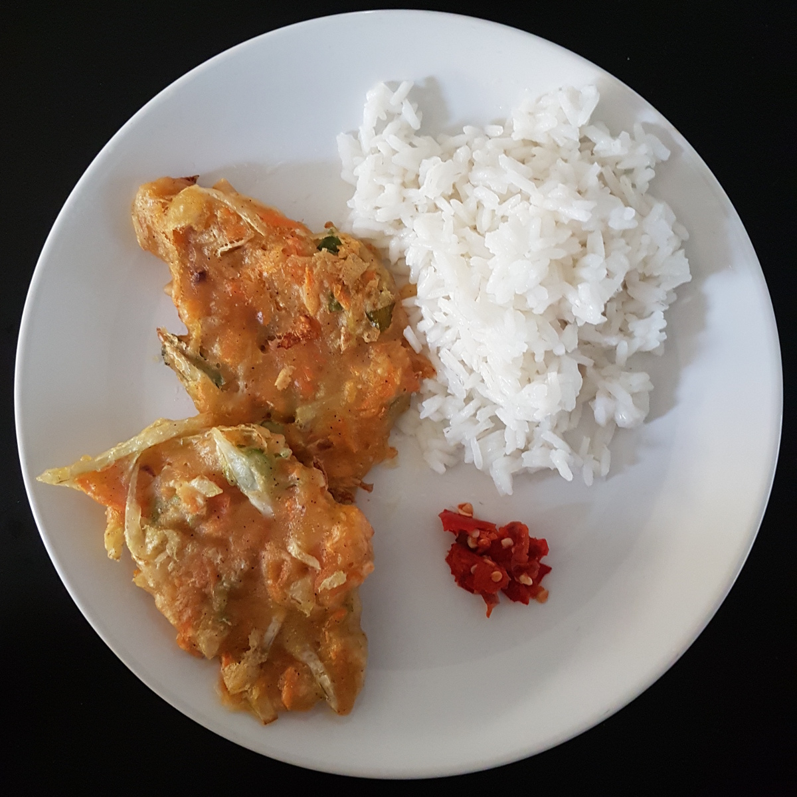

Bala Bala is an Indonesian dish. It can be eaten alone, with rice or with Sambel goang.
{kind=link}

This takes approximately 45 minutes.
Ingredients
For 4 people, you need:
- 400g Wheat Flour (e.g. Type 405)
- 3 teaspoons of Thai spices (e.g. "Rosdee" Food Seasoning with Chicken Flavour) or chicken broth powder
- 3 Carrots
- 1/4th White Cabbage
- 1 long green onion
- 300ml of water
- Salt
- Pepper
- Oil for frying (at least 100ml)
{kind=link}
.jpg){kind=link}
Optionally:
- 140g corn
Tools
- 1 Big bowl
- 1 Sharp knife and cutting board
- 1 Peeler
- 1 Grater
- 1 frying pan
- 1 spatula
.jpg){kind=link}
{kind=link}
.jpg){kind=link}
{kind=link}
Preparation
Peel the carrots and use the grater to make small pieces. Cut the green onion into pieces.
Put the flour and the spices in the bowl and mix it. Add the carrots, the cabbage and the onions and mix again. Add the water, salt and pepper. Mix until you get a homogeneous dough. Add more water if you can't mix the stuff. Add more flour if it is not sticking together.
Put the oil in the pan. The oil should be at least 0.5cm high. Heat the oil until it is hot.
Put the dough in it. Fry to the degree you like.